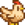

Hühnerstall
| Hühnerstall | Großer Hühnerstall | Luxus-Hühnerstall | |

|

|

| |
|---|---|---|---|
| Information | |||
| Voraussetzung | N/A | Hühnerstall | Großer Hühnerstall |
| Baukosten | |||
| Baumaterialien | |||
| Kapazität | 4 | 8 | 12 |
| Tiere |  Huhn | Huhn |
Huhn |
| Größe | 6x3 |
6x3 |
6x3 |
| Merkmale |
|
|
|
Der Hühnerstall ist ein Hofgebäude, das im Schreinerladen von Robin gekauft und ausgebaut werden kann. Der Bau dauert drei Tage, der Ausbau zwei Tage.
Im Stall können Hühner, Enten, Hasen und Dinosaurier untergebracht werden.
Der Luxus-Hühnerstall kostet zusammengerechnet mit den Vorstufen insgesamt  34.000 G,
34.000 G,  Holz (1200) und
Holz (1200) und  Stein (450) (Oder
Stein (450) (Oder  55.000 G, wenn alle benötigten Baumaterialien bei Robin gekauft werden).
55.000 G, wenn alle benötigten Baumaterialien bei Robin gekauft werden).
Der Luxus-Hühnerstall verfügt über ein automatisches Fütterungssystem, sodass das Heu vom Silo automatisch verteilt wird. (Tiere können trotzdem Gras im Freien fressen, das Heu wird dann nicht verbraucht)
Im Hühnerstall lebende Tiere können nachts ausgesperrt werden, wenn die Stalltore geschlossen sind. Die genauen Bedingungen hierfür sind unklar.
Verbringt ein Tier die Nacht im Freien, wird es am nächsten Tag schlecht gelaunt sein. Es besteht zudem die Möglichkeit, dass das Tier Opfer eines Wildtierangriffs wird.

Bilder vom Innenbereich

Hühnerstall Innenbereich

Großer Hühnerstall Innenbereich

Luxus-Hühnerstall Innenbereich
| Gebäude | ||
|---|---|---|
| Händler | Abenteurergilde • Anglerbedarf • Bruchbude • Buchhändler • Eisstand • Geheimes Walnusszimmer von Mr. Qi • Inselhändler • Joja-Markt • Kasino • Klinik • Kneipe • Marnies Ranch • Oase • Pierres Gemischtwarenladen • Reisewagen • Schmied • Schreinerladen • Turm des Zauberers • Vulkanzwerg • Wüstenhändler | |
| Häuser | Bauernhaus • Baumhaus • Bergstraße 24 • Elliotts Hütte • Flussstraße 1 • Flussstraße 2 • Haus des Bürgermeisters • Insel-Farmhaus • Leahs Hütte • Weidengasse 1 • Weidengasse 2 • Wohnwagen • Zelt | |
| Bauernhof Gebäude | Bauernhof | Brunnen • Fischteich • Gewächshaus • Hühnerstall • Hütte • Mühle • Pferdestall • Schleim-Stall • Schuppen • Silo • Stall |
| Spezial | Erdobelisk • Goldene Uhr • Hof-Obelisk • Insel-Obelisk • Junimo-Hütte • Wasserobelisk • Wüsten Obelisk | |
| andere Gebäude | Gemeinschaftszentrum • Hexenhütte • Hundehütte • Insel-Außenstelle • Joja-Warenhaus • Kanalisation • Kino • Museum • Spa | |